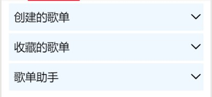
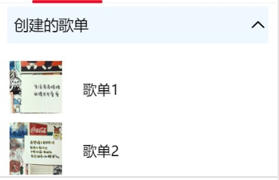

在小程序页面中，一个可点开、关闭的折叠面板，并且能在点开面板中任意添加不同的内容，我们能够如何实现呢？

首先需要在view中加入data-index在事件中获取这些自定义的节点数据，用于事件的逻辑处理；然后需要添加catchtap事件绑定。
注意：关闭时是向下箭头，点击后是向上箭头。这个过程需要对图片进行条件渲染，添加一个shouIndex。
wxml代码如下：
<view class='help_item'>
<view class='title' data-index='1' catchtap='panel'>
<view class='title_1'>创建的歌单</view>
<view class='title_2'><image src="/images/{{showIndex == 1 ? 'up':'down'}}.png"></image></view>
</view>
<view class='detail' wx:if="{{showIndex == 1}}">
<view class="v2">
<view>
<image class="img" src="/images/img4.jpg"></image>
<text class="t1">歌单1</text>
</view>
<view>
<image class="img" src="/images/img5.jpg"></image>
<text class="t1">歌单2</text>
</view>
<view>
<image class="img" src="/images/img6.jpg"></image>
<text class="t1">歌单3</text>
</view>
</view>
</view>
</view>
在wxss中需要配置将文字和箭头图片放在一行的左右两端。代码如下：
.help_item {
margin: 10rpx auto;
}
.title {
font-size: 40rpx;
height: 100rpx;
line-height: 100rpx;
background: aliceblue;
display: flex;
}
.title_1 {
width: 630rpx;
height: 100rpx;
padding-left: 20rpx;
}
.title_2 {
width: 50rpx;
height: 100rpx;
text-align: center;
}
.title_2 image {
width: 40rpx;
height: 40rpx;
margin: 30rpx auto;
}
在wxml中已经准备好的事件catchtap=‘panel'进行数据的绑定。代码如下：
panel: function (e) {
if (e.currentTarget.dataset.index != this.data.showIndex) {
this.setData({
showIndex: e.currentTarget.dataset.index
})
} else {
this.setData({
showIndex: 0
})
}
},
折叠面板的实现主要放在事件绑定上，注意用到的是catch事件绑定，因为它可以阻止冒泡事件向上冒泡。折叠面板也可以根据需要在展开的面板中进行自定义的配置。